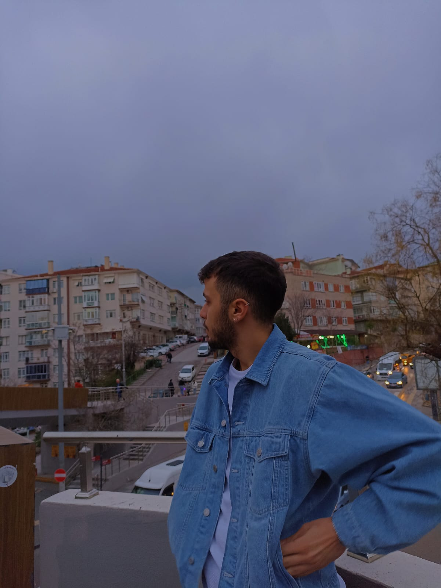

13.05.2003 yılında İstanbul'da doğdum
Aslında Rize Ardeşen'liyim.Babam laz annem hemşinli.
Ben basketbol oyuncusuydum üniversiteye girmedeen önce 10 sene basketbol oynadım.2 sene kickboks yaptım.
1 seneye yakın futbol oynadım.Kısacası hayatım boyunca spor yapmayı çok seven birisi oldum.
Konya Selçuk Üniversitesinde okuyorum.Bölümüm Bilgisayar Mühendisliği.Bölümümü çok severek okuyorum.
Emirhan Navdar
